Introduction to microbiomeutilities
Source:vignettes/microbiomeutilities.Rmd
microbiomeutilities.Rmdmicrobiomeutilties R package
The microbiomeutilities R package is mainly a wrapper tool with diverse functions for data handling and visualisation.
Install
install.packages("devtools") devtools::install_github("microsud/microbiomeutilities")
Example data
Package data from Zackular et al., 2014: The Gut Microbiome Modulates Colon Tumorigenesis.
Useful resources:
For more information on phyloseq data structure and uses you can have a look at Phyloseq
Tools for microbiome analysis in R. Microbiome package URL: microbiome package.
data("zackular2014") ps0 <- zackular2014 ps0 #> phyloseq-class experiment-level object #> otu_table() OTU Table: [ 2078 taxa and 88 samples ] #> sample_data() Sample Data: [ 88 samples by 7 sample variables ] #> tax_table() Taxonomy Table: [ 2078 taxa by 7 taxonomic ranks ]
The print_ps from microbiomeutilities can give additional information.
print_ps(ps0) #> 01] object is phyloseq #> 02] ntaxa = 2078 #> 03] nsamples = 88 #> 04] nsamplesvariables = 7 #> 05] nranks = 7 #> 06] Min. number of reads = 15704 #> 07] Max. number of reads = 216888 #> 08] Total number of reads = 4594626 #> 09] Average number of reads = 52211.66 #> 10] Median number of reads = 49415.5 #> 11] Sparsity = 0.728426590252865 #> 12] Number of singletons = 0 #> 13] % of taxa that are singletons #> (i.e. exactly one read detected across all samples) = 0
Formatting the Phyloseq Object
Most commonly it is observed that the taxonomy file has classification until a given taxonomic level.We can change the names in both otu table and taxonomy table with the best taxonomic classification available. This can be useful if the analysis has to be done at OTU level. Only ID are less useful.
Check the taxonomy in phyloseq object.
| Domain | Phylum | Class | Order | Family | Genus | Species | |
|---|---|---|---|---|---|---|---|
| d__denovo1773 | k__Bacteria | p__Bacteroidetes | c__Bacteroidia | o__Bacteroidales | f__Bacteroidaceae | g__Bacteroides | s__ |
| d__denovo1771 | k__Bacteria | p__Bacteroidetes | c__Bacteroidia | o__Bacteroidales | f__Bacteroidaceae | g__Bacteroides | s__ |
| d__denovo1776 | k__Bacteria | p__Firmicutes | c__Clostridia | o__Clostridiales | f__Ruminococcaceae | g__ | s__ |
| d__denovo1777 | k__Bacteria | p__Bacteroidetes | c__Bacteroidia | o__Bacteroidales | f__Bacteroidaceae | g__Bacteroides | s__ |
| d__denovo1775 | k__Bacteria | p__Firmicutes | c__Clostridia | o__Clostridiales | f__Lachnospiraceae | g__Blautia | s__ |
| d__denovo2639 | k__Bacteria | p__Bacteroidetes | c__Bacteroidia | o__Bacteroidales | f__Bacteroidaceae | g__Bacteroides | s__ |
Some have only g__ of s__ information.
data("zackular2014") p0 <- zackular2014 # reduce size for example ps0 <- core(p0, detection = 10, prevalence = 20 / 100) # Add a prefix to taxa labels ps0.f2 <- format_to_besthit(ps0, prefix = "MyBug-") kable(head(tax_table(ps0.f2))[3:6])
| Domain | Phylum | Class | Order | Family | Genus | Species | best_hit | |
|---|---|---|---|---|---|---|---|---|
| MyBug-d__denovo165:f__Ruminococcaceae | Bacteria | Firmicutes | Clostridia | Clostridiales | Ruminococcaceae | f__Ruminococcaceae | f__Ruminococcaceae | MyBug-d__denovo165:f__Ruminococcaceae |
| MyBug-d__denovo167:Coprococcus | Bacteria | Firmicutes | Clostridia | Clostridiales | Lachnospiraceae | Coprococcus | g__Coprococcus | MyBug-d__denovo167:Coprococcus |
| MyBug-d__denovo166:o__Clostridiales | Bacteria | Firmicutes | Clostridia | Clostridiales | o__Clostridiales | o__Clostridiales | o__Clostridiales | MyBug-d__denovo166:o__Clostridiales |
| MyBug-d__denovo161:Roseburia | Bacteria | Firmicutes | Clostridia | Clostridiales | Lachnospiraceae | Roseburia | g__Roseburia | MyBug-d__denovo161:Roseburia |
Now the available taxonomy is added.
As can be seen, the rownames have the OTUIDs and available toxonomic name(s).
Summarize the percent taxa classification for phyloseq
This can be useful to get an overview of taxonomic classifications. Only patterns such as [g__] or NA is expected. [g__NA.
This best works with cleaned taxonomy table.
data("zackular2014") p0 <- zackular2014 # reduce size for example ps0 <- core(p0, detection = 10, prevalence = 50 / 100) percent_classified(ps0)
Distribution of reads
Useful for QC purposes. Check for siatribution of sequencing depth.
data("zackular2014") p0 <- zackular2014 p <- plot_read_distribution(p0, groups = "DiseaseState", plot.type = "density") #> [1] "Done plotting" print(p)
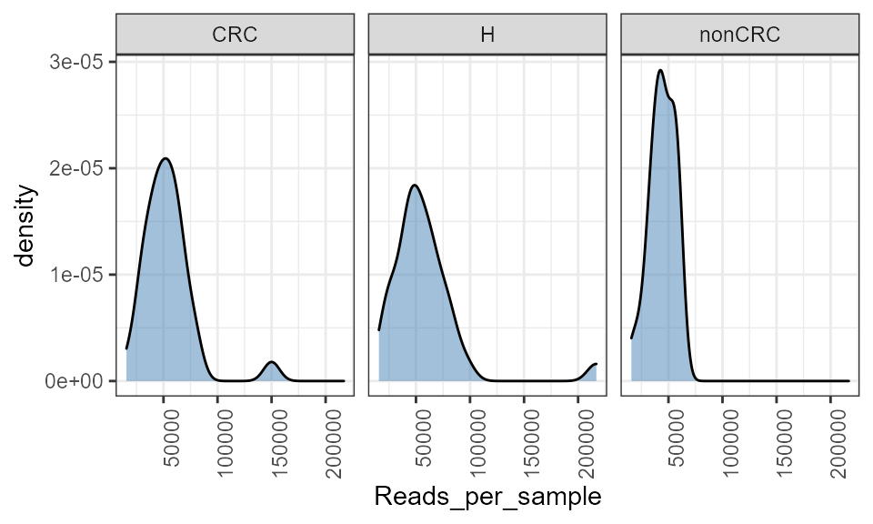
Convert phyloseq object to long data format
Useful if the user wants to plot specific features.
data("zackular2014") p0 <- zackular2014 # reduce size for example ps0 <- core(p0, detection = 10, prevalence = 20 / 100) pseq_df <- phy_to_ldf(ps0, transform.counts = NULL) #> An additonal column Sam_rep with sample names is created for reference purpose kable(head(pseq_df))
| OTUID | Domain | Phylum | Class | Order | Family | Genus | Species | Sam_rep | Abundance | investigation_type | project_name | DiseaseState | age | body_product | FOBT.result | material |
|---|---|---|---|---|---|---|---|---|---|---|---|---|---|---|---|---|
| d__denovo66 | k__Bacteria | p__Firmicutes | c__Clostridia | o__Clostridiales | f__Lachnospiraceae | g__Ruminococcus2 | s__ | Adenoma10-2757 | 27 | metagenomic | The Gut Microbiome Improves Predictive Models for Diagnosis of Colorectal Cancer | nonCRC | 37 | feces | negative | feces |
| d__denovo175 | k__Bacteria | p__Bacteroidetes | c__Bacteroidia | o__Bacteroidales | f__Rikenellaceae | g__Alistipes | s__ | Adenoma10-2757 | 0 | metagenomic | The Gut Microbiome Improves Predictive Models for Diagnosis of Colorectal Cancer | nonCRC | 37 | feces | negative | feces |
| d__denovo165 | k__Bacteria | p__Firmicutes | c__Clostridia | o__Clostridiales | f__Ruminococcaceae | g__ | s__ | Adenoma10-2757 | 49 | metagenomic | The Gut Microbiome Improves Predictive Models for Diagnosis of Colorectal Cancer | nonCRC | 37 | feces | negative | feces |
| d__denovo167 | k__Bacteria | p__Firmicutes | c__Clostridia | o__Clostridiales | f__Lachnospiraceae | g__Coprococcus | s__ | Adenoma10-2757 | 155 | metagenomic | The Gut Microbiome Improves Predictive Models for Diagnosis of Colorectal Cancer | nonCRC | 37 | feces | negative | feces |
| d__denovo166 | k__Bacteria | p__Firmicutes | c__Clostridia | o__Clostridiales | f__ | g__ | s__ | Adenoma10-2757 | 0 | metagenomic | The Gut Microbiome Improves Predictive Models for Diagnosis of Colorectal Cancer | nonCRC | 37 | feces | negative | feces |
| d__denovo161 | k__Bacteria | p__Firmicutes | c__Clostridia | o__Clostridiales | f__Lachnospiraceae | g__Roseburia | s__ | Adenoma10-2757 | 11 | metagenomic | The Gut Microbiome Improves Predictive Models for Diagnosis of Colorectal Cancer | nonCRC | 37 | feces | negative | feces |
Check distirbution
A quick check to see how different taxa are distributed in your data.
library(microbiomeutilities) library(ggpubr) data("zackular2014") pseq <- zackular2014 # check healthy health_ps <- subset_samples(pseq, DiseaseState=="H") p_hc <- taxa_distribution(health_ps) # check CRC crc_ps <- subset_samples(pseq, DiseaseState=="CRC") p_crc <- taxa_distribution(crc_ps) ggarrange(p_hc, p_crc, nrow=2, ncol=1) #> Warning: Transformation introduced infinite values in continuous x-axis #> Warning: Removed 8 rows containing non-finite values (stat_density). #> Warning: Groups with fewer than two data points have been dropped. #> Warning: Removed 1 row(s) containing missing values (geom_path). #> Warning: Transformation introduced infinite values in continuous x-axis #> Warning: Removed 15 rows containing non-finite values (stat_density). #> Warning: Groups with fewer than two data points have been dropped. #> Warning: Removed 1 row(s) containing missing values (geom_path).
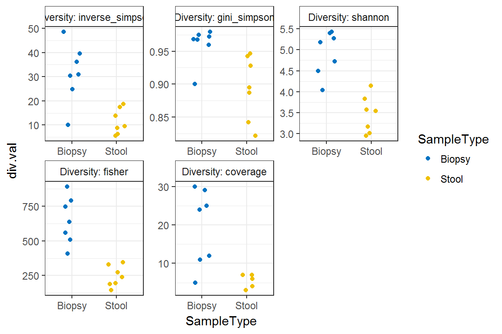
There are Cyanobacteria/Chloroplast related sequences which can be removed if not expected in the samples.
Plot alpha diversities
Utility plot function for diversity measures calculated by microbiome package.
library(microbiome) data("zackular2014") ps0 <- zackular2014 mycols <- c("brown3", "steelblue","grey50") p <- plot_alpha_diversities(ps0, type = "dominance", index.val = "all", plot.type = "stripchart", variableA = "DiseaseState", palette = mycols) print(p)
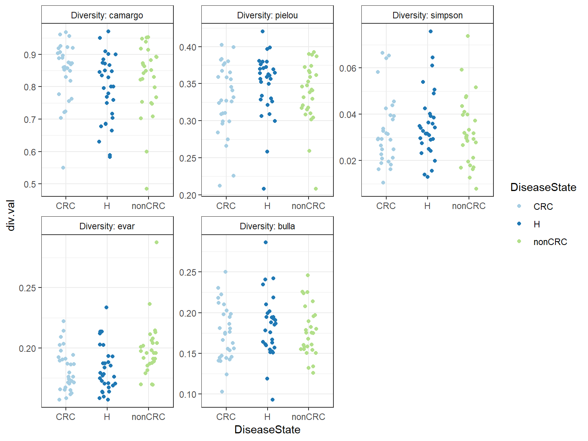
comps <- make_pairs(sample_data(ps0)$DiseaseState) p <- p + stat_compare_means( comparisons = comps, label = "p.format", tip.length = 0.05, method = "wilcox.test") p #> Warning in wilcox.test.default(c(7855, 4967, 16964, 6997, 11425, 17013, : cannot #> compute exact p-value with ties

Alternatively, one can plot one index at a time with pair-wise stats.
library(gghalves) library(microbiomeutilities) data("zackular2014") p0 <- zackular2014 mycols <- c("brown3", "steelblue","grey50") p.m <- plot_diversity_stats(p0, group = "DiseaseState", index = "diversity_shannon", group.order = c("H", "CRC", "nonCRC"), group.colors = mycols, label.format="p.format", stats = TRUE) p.m + ylab("Shannon Diversity") + xlab("")

Plot ordination and core
library(microbiomeutilities) library(RColorBrewer) data("zackular2014") p0 <- zackular2014 ps1 <- format_to_besthit(p0) #ps1 <- subset_samples(ps1, DiseaseState == "H") ps1 <- prune_taxa(taxa_sums(ps1) > 0, ps1) prev.thres <- seq(.05, 1, .05) det.thres <- 10^seq(log10(1e-4), log10(.2), length = 10) pseq.rel <- microbiome::transform(ps1, "compositional") # reduce size for example pseq.rel <- core(pseq.rel, detection = 0.001, prevalence = 20 / 100) ord.bray <- ordinate(pseq.rel, "NMDS", "bray") p <- plot_ordiplot_core(pseq.rel, ord.bray, prev.thres, det.thres, min.prevalence = 0.9, color.opt = "DiseaseState", shape = NULL, Sample = TRUE) print(p)
library(microbiome) library(microbiomeutilities) library(dplyr) data("zackular2014") p0 <- zackular2014 p <- plot_ternary(p0, group="DiseaseState", abund.thres=0.000001, level= "Genus", prev.thres=0.01) #> An additonal column Sam_rep with sample names is created for reference purpose p

Dominant taxa
Sometimes, we are interested in identify the most dominant taxa in each sample. We may also wish to check what percent of samples within a given group are these taxa dominating.
library(microbiomeutilities) library(dplyr) data("zackular2014") p0 <- zackular2014 p0.gen <- aggregate_taxa(p0,"Genus") x.d <- dominant_taxa(p0,level = "Genus", group="DiseaseState") #> Joining, by = "sample_id" head(x.d$dominant_overview) #> # A tibble: 6 x 5 #> # Groups: DiseaseState [3] #> DiseaseState dominant_taxa n rel.freq rel.freq.pct #> <fct> <chr> <int> <dbl> <chr> #> 1 H g__Bacteroides 15 50 50% #> 2 nonCRC g__Blautia 13 46.4 46% #> 3 CRC g__Bacteroides 9 30 30% #> 4 CRC g__Blautia 9 30 30% #> 5 H g__Blautia 7 23.3 23% #> 6 nonCRC g__Bacteroides 6 21.4 21%
As seen in the table above, 50% of the samples in H group are dominated by *g__Bacteroides* and so on…
Get taxa summary
This can be used for entire dataset.
library(microbiomeutilities) data("zackular2014") p0 <- zackular2014 tx.sum1 <- taxa_summary(p0, "Phylum") #> Data provided is not compositional #> will first transform
Get taxa summary by group(s)
For group specific abundances of taxa get_group_abundances.
library(microbiomeutilities) data("zackular2014") p0 <- zackular2014 get_group_abundances(p0, level = "Phylum", group="DiseaseState") #> An additonal column Sam_rep with sample names is created for reference purpose #> # A tibble: 33 x 4 #> # Groups: DiseaseState [3] #> DiseaseState OTUID mean_abundance sd_abundance #> <fct> <chr> <dbl> <dbl> #> 1 CRC p__ 0.00132 0.00201 #> 2 CRC p__Actinobacteria 0.0235 0.0286 #> 3 CRC p__Bacteroidetes 0.254 0.181 #> 4 CRC p__Cyanobacteria/Chloroplast 0.0000918 0.000193 #> 5 CRC p__Deinococcus-Thermus 0.000919 0.00315 #> 6 CRC p__Euryarchaeota 0.0227 0.0437 #> 7 CRC p__Firmicutes 0.570 0.171 #> 8 CRC p__Fusobacteria 0.0233 0.0870 #> 9 CRC p__Proteobacteria 0.0623 0.0991 #> 10 CRC p__Synergistetes 0.000445 0.00197 #> # ... with 23 more rows
Plot taxa boxplot
Plot relative abundance of top taxa specified by user.
library(microbiomeutilities) library(RColorBrewer) data("zackular2014") ps0 <- zackular2014 mycols <- c("brown3", "steelblue", "grey50") pn <- plot_taxa_boxplot(ps0, taxonomic.level = "Family", top.otu = 3, group = "DiseaseState", add.violin= FALSE, title = "Top three family", keep.other = FALSE, group.order = c("H","CRC","nonCRC"), group.colors = mycols, dot.size = 1) print(pn + theme_biome_utils())
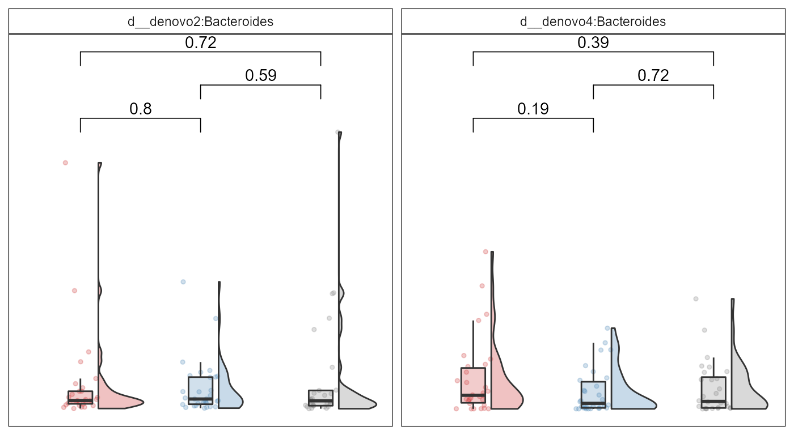
Plotting selected taxa
Using a list of taxa specified by the user for comparisons.
library(microbiome) library(microbiomeutilities) library(ggpubr) data("zackular2014") p0 <- zackular2014 p0.f <- format_to_besthit(p0) select.taxa <- c("d__denovo4:Bacteroides", "d__denovo2:Bacteroides") mycols <- c("brown3", "steelblue", "grey50") p <- plot_listed_taxa(p0.f, select.taxa, group= "DiseaseState", group.order = c("H","CRC","nonCRC"), group.colors = mycols, add.violin = TRUE, violin.opacity = 0.3, dot.opacity = 0.25, box.opacity = 0.25, panel.arrange= "grid") #> An additonal column Sam_rep with sample names is created for reference purpose print(p + ylab("Relative abundance") + scale_y_continuous(labels = scales::percent))
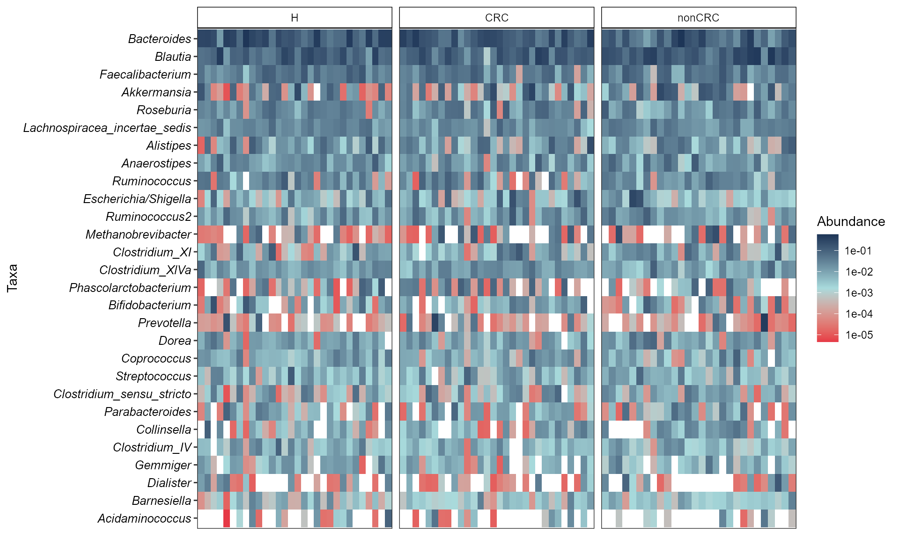
Adding statistical test with ggpubr::stat_compare_means()
# If more than two variables comps <- make_pairs(sample_data(p0.f)$DiseaseState) print(comps) #> [[1]] #> [1] "CRC" "H" #> #> [[2]] #> [1] "CRC" "nonCRC" #> #> [[3]] #> [1] "H" "nonCRC" p <- p + stat_compare_means( comparisons = comps, label = "p.format", tip.length = 0.05, method = "wilcox.test") p
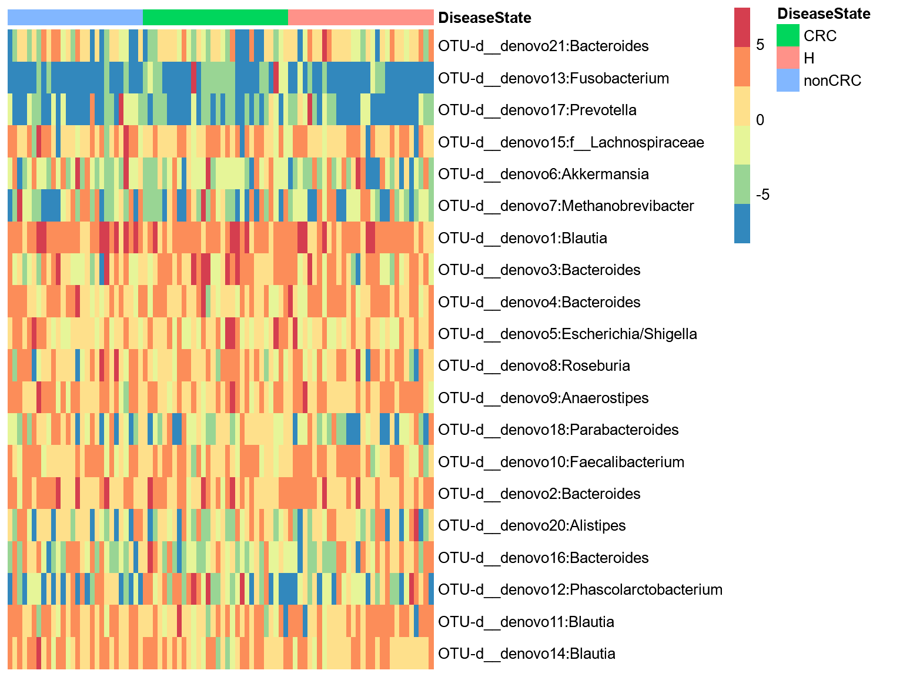
Plot top four Genera
library(microbiome) library(microbiomeutilities) data("zackular2014") p0 <- zackular2014 p0.f <- aggregate_taxa(p0, "Genus") top_four <- top_taxa(p0.f, 4) top_four #> [1] "g__Bacteroides" "g__Blautia" "g__Faecalibacterium" #> [4] "g__Akkermansia" mycols <- c("brown3", "steelblue", "grey50") p <- plot_listed_taxa(p0.f, top_four, group= "DiseaseState", group.order = c("H","CRC","nonCRC"), group.colors = mycols, add.violin = TRUE, violin.opacity = 0.3, dot.opacity = 0.25, box.opacity = 0.25, panel.arrange= "wrap") comps <- make_pairs(sample_data(p0.f)$DiseaseState) p <- p + stat_compare_means( comparisons = comps, label = "p.format", tip.length = 0.05, method = "wilcox.test") print(p + ylab("Relative abundance") + scale_y_continuous(labels = scales::percent)) #> Warning in wilcox.test.default(c(0.0242631263865901, 5.19237758969832e-05, : #> cannot compute exact p-value with ties
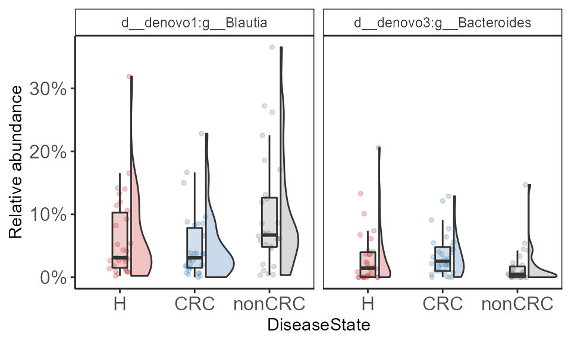
Abundance-Prevalence relationship
Plots Mean Abundance-Prevalence for taxa. Mean abundance, mean prevalence, and upper and lower confidence interval for each taxa is calculated by random subsampling.
This can be useful in identifying highly prevalent taxa and thier mean relative abundance in a group of samples. Taxa that are highly prevalent with low variation in lower and upper CI can be identified at varying values of mean relative abundance. These are likely core taxa in the groups of samples.
library(microbiomeutilities) library(dplyr) library(ggrepel) asv_ps <- zackular2014 asv_ps <- microbiome::transform(asv_ps, "compositional") # Select healthy samples asv_ps <- subset_samples(asv_ps, DiseaseState=="H") asv_ps <- core(asv_ps,detection = 0.0001, prevalence = 0.50) # reduce size for example asv_ps <- format_to_besthit(asv_ps) set.seed(14285) p_v <- plot_abund_prev(asv_ps, label.core = TRUE, color = NULL, mean.abund.thres = 0.01, mean.prev.thres = 0.99, point.opacity = 0.1, label.size = 3, label.opacity = 1.0, nudge.label=-0.15, bs.iter=9, size = 20, replace = TRUE) #> Make sure to set.seed #> Joining, by = "Taxa" #> Joining, by = "Taxa" #> Joining, by = "Taxa" p_v <- p_v + geom_vline(xintercept = 0.95, lty="dashed", alpha=0.7) + geom_hline(yintercept = 0.01,lty="dashed", alpha=0.7) + scale_color_brewer(palette = "Dark2") p_v
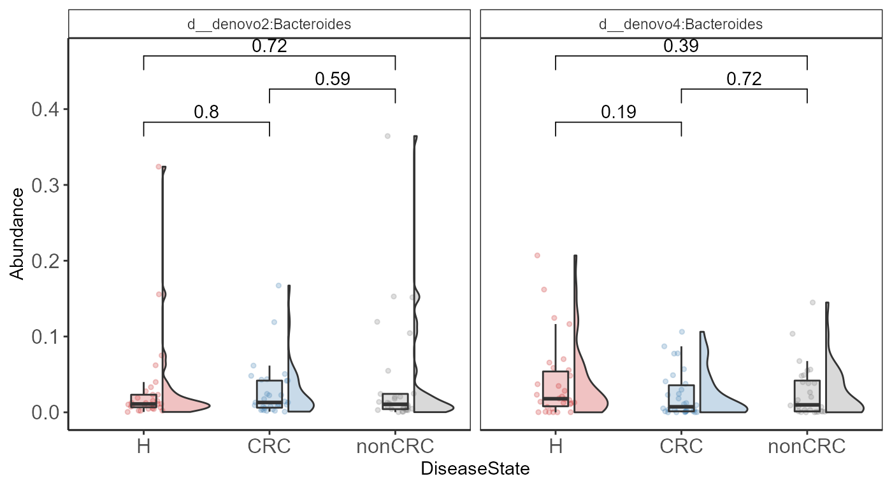
Microbiota plasticity
Calculate plasticity
See Grembi, J.A., Nguyen, L.H., Haggerty, T.D. et al. Gut microbiota plasticity is correlated with sustained weight loss on a low-carb or low-fat dietary intervention. Sci Rep 10, 1405 (2020).
library(microbiome) library(microbiomeutilities) library(dplyr) library(ggpubr) data(peerj32) pseq <- peerj32$phyloseq pseq.rel <- microbiome::transform(pseq, "compositional") pl <- plasticity(pseq.rel, dist.method = "bray", participant.col="subject") head(pl) #> S1 S2 bray time_1 sex_1 sample_1 group_1 time_2 sex_2 #> 1 sample-2 sample-1 0.2451330 2 female sample-2 Placebo 1 female #> 2 sample-4 sample-3 0.1563982 2 female sample-4 Placebo 1 female #> 3 sample-6 sample-5 0.1892079 2 female sample-6 LGG 1 female #> 4 sample-8 sample-7 0.1760096 2 male sample-8 Placebo 1 male #> 5 sample-10 sample-9 0.1936717 2 female sample-10 Placebo 1 female #> 6 sample-12 sample-11 0.1716045 2 female sample-12 LGG 1 female #> sample_2 group_2 subject #> 1 sample-1 Placebo S1 #> 2 sample-3 Placebo S2 #> 3 sample-5 LGG S3 #> 4 sample-7 Placebo S4 #> 5 sample-9 Placebo S5 #> 6 sample-11 LGG S6
Alternatively, using correlation methods for plasticity, one can check for similarity between technical replicates (2X sequenced same sample) for quality check.
Plot plasticity
ggplot(pl, aes(group_2,bray)) + geom_boxplot(aes(fill=group_2), alpha=0.5, na.rm = TRUE, width=0.5) + geom_jitter(aes(color=group_2), alpha=0.5, size=3, na.rm = TRUE) + scale_fill_manual(values = c("#457b9d", "#e63946"))+ scale_color_manual(values = c("#457b9d", "#e63946"))+ stat_compare_means() + theme_biome_utils()
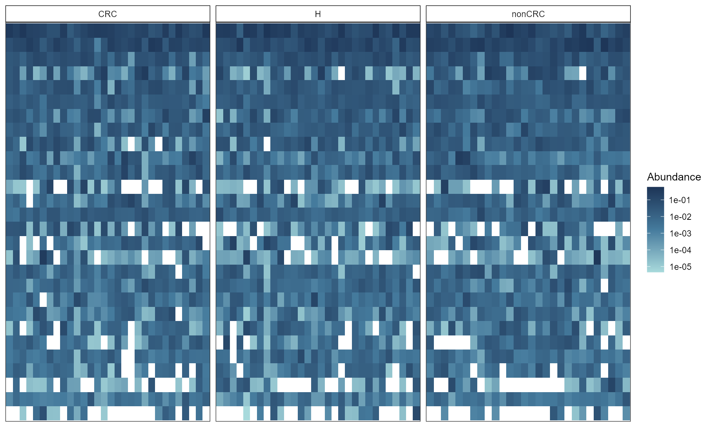
Heatmaps
Heatmap using phyloseq and pheatmap
Useful for visualisng differences in top otus between sample groups.
library(pheatmap) library(RColorBrewer) data("zackular2014") ps0 <- zackular2014 plot_taxa_heatmap(ps0, subset.top = 20, VariableA = "DiseaseState", heatcolors = rev(brewer.pal(3, "RdPu")), transformation = "clr", cluster_rows = F, cluster_cols = F, show_colnames = F) #> Top 20 OTUs selected #> First top taxa were selected and #> then abundances tranformed to clr
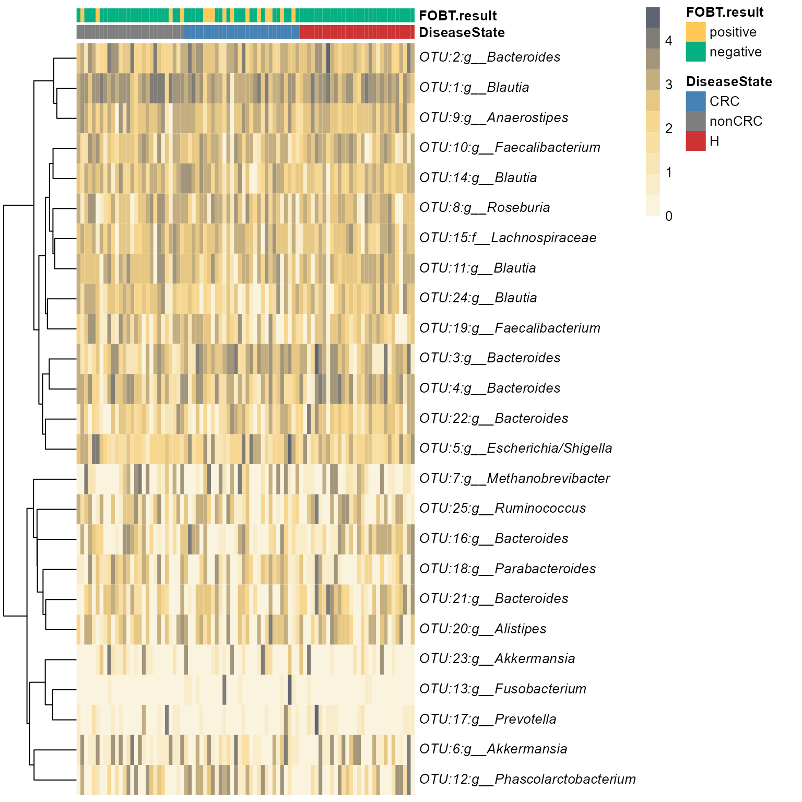
Elegant option with ggplot2
library(microbiomeutilities) data("zackular2014") p0 <- zackular2014 p0.rel <- transform(p0, "compositional") heat.cols <- c("#a8dadc","#457b9d", "#1d3557") simple_heatmap(p0.rel, group.facet = "DiseaseState", group.order = NULL, abund.thres = 0.01, prev.thres = 0.1, level = "Genus", scale.color = "log10", na.fill = "white", color.fill = heat.cols, taxa.arrange=TRUE, remove.other=TRUE, panel.arrange="grid", ncol=NULL, nrow=NULL) #> Warning: Transformation introduced infinite values in discrete y-axis
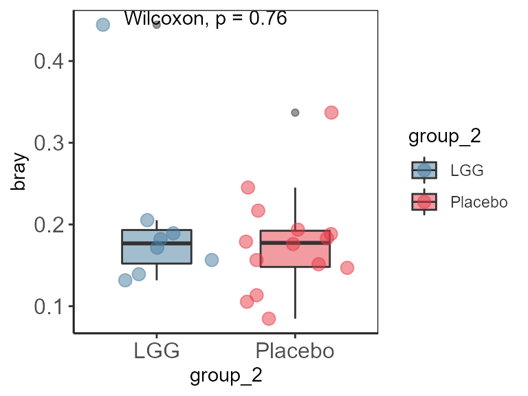
MicrobiomeHD datasets as phyloseq objects
We provide access to a subset of studies included in the MicrobiomeHD database from Duvallet et al 2017: Meta-analysis of gut microbiome studies identifies disease-specific and shared responses. Nature communications.
The phyloseq objects are stored and accessed from microbiomedatarepo.
study <- list_microbiome_data(printtab = FALSE) knitr::kable(study)
| Study | Disease |
|---|---|
| Son2015_ASD | ASD |
| Kang2013_ASD | ASD |
| Schubert2014_CDI | CDI |
| Youngster2014_CDI | CDI |
| Baxter2016_CRC | CRC |
| Zackular2014_CRC | CRC |
| Zeller2014_CRC | CRC |
| Singh2015_EDD | EDD |
| NogueraJulian2016_HIV | HIV |
| Dinh2015_HIV | HIV |
| Lozupone2013_HIV | HIV |
| Gevers2014_IBD | IBD |
| Zhang2013_LIV | LIV |
| Wong2013_NASH | NASH |
| Ross2015_OB | OB |
| Zupancic2012_OB | OB |
| Scher2013_PAR | PAR |
| Alkanani2015_T1D | T1D |
| Scheperjans2015_PAR | PAR |
| Alkanani2015_T1D | T1D |
Below is the per study reference.
NOTE: When using these studies, please cite Duvallet et al. 2017 and the respective studies.
file <- system.file("extdata", "microbiomeHD_ref.txt", package = "microbiomeutilities") reference <- read.table(file, header = T, sep = "\t") knitr::kable(reference)
For more tutorials and examples of data anlaysis in R please check:
sessionInfo() #> R version 4.0.2 (2020-06-22) #> Platform: x86_64-w64-mingw32/x64 (64-bit) #> Running under: Windows 10 x64 (build 18363) #> #> Matrix products: default #> #> locale: #> [1] LC_COLLATE=English_Netherlands.1252 LC_CTYPE=English_Netherlands.1252 #> [3] LC_MONETARY=English_Netherlands.1252 LC_NUMERIC=C #> [5] LC_TIME=English_Netherlands.1252 #> #> attached base packages: #> [1] stats graphics grDevices utils datasets methods base #> #> other attached packages: #> [1] pheatmap_1.0.12 ggrepel_0.8.2 #> [3] RColorBrewer_1.1-2 gghalves_0.1.0 #> [5] ggpubr_0.4.0 tibble_3.0.3 #> [7] knitr_1.29 microbiomeutilities_1.00.05 #> [9] dplyr_1.0.2 microbiome_2.1.28 #> [11] ggplot2_3.3.2 phyloseq_1.33.0 #> #> loaded via a namespace (and not attached): #> [1] Rtsne_0.15 colorspace_1.4-1 ggsignif_0.6.0 #> [4] ellipsis_0.3.1 rio_0.5.16 rprojroot_1.3-2 #> [7] XVector_0.29.3 fs_1.5.0 rstudioapi_0.11 #> [10] farver_2.0.3 fansi_0.4.1 codetools_0.2-16 #> [13] splines_4.0.2 robustbase_0.93-6 ade4_1.7-15 #> [16] jsonlite_1.7.1 ggtern_3.3.0 broom_0.7.1 #> [19] cluster_2.1.0 latex2exp_0.4.0 compiler_4.0.2 #> [22] backports_1.1.10 assertthat_0.2.1 Matrix_1.2-18 #> [25] cli_2.0.2 htmltools_0.5.0 tools_4.0.2 #> [28] igraph_1.2.5 gtable_0.3.0 glue_1.4.2 #> [31] reshape2_1.4.4 Rcpp_1.0.5 carData_3.0-4 #> [34] Biobase_2.49.1 cellranger_1.1.0 pkgdown_1.6.1 #> [37] vctrs_0.3.4 Biostrings_2.57.2 rhdf5filters_1.1.2 #> [40] multtest_2.45.0 ape_5.4-1 nlme_3.1-148 #> [43] iterators_1.0.12 tensorA_0.36.1 xfun_0.17 #> [46] stringr_1.4.0 proto_1.0.0 openxlsx_4.2.2 #> [49] lifecycle_0.2.0 rstatix_0.6.0 DEoptimR_1.0-8 #> [52] zlibbioc_1.35.0 MASS_7.3-51.6 scales_1.1.1 #> [55] ragg_0.3.1 hms_0.5.3 parallel_4.0.2 #> [58] biomformat_1.17.0 rhdf5_2.33.7 yaml_2.2.1 #> [61] curl_4.3 memoise_1.1.0 gridExtra_2.3 #> [64] stringi_1.5.3 highr_0.8 S4Vectors_0.27.12 #> [67] desc_1.2.0 foreach_1.5.0 permute_0.9-5 #> [70] BiocGenerics_0.35.4 zip_2.1.1 cpp11_0.2.2 #> [73] rlang_0.4.7 pkgconfig_2.0.3 systemfonts_0.3.1 #> [76] compositions_2.0-0 evaluate_0.14 lattice_0.20-41 #> [79] purrr_0.3.4 Rhdf5lib_1.11.3 labeling_0.3 #> [82] cowplot_1.1.0 tidyselect_1.1.0 plyr_1.8.6 #> [85] magrittr_1.5 R6_2.4.1 IRanges_2.23.10 #> [88] generics_0.0.2 pillar_1.4.6 haven_2.3.1 #> [91] foreign_0.8-80 withr_2.3.0 mgcv_1.8-31 #> [94] survival_3.1-12 abind_1.4-5 bayesm_3.1-4 #> [97] crayon_1.3.4 car_3.0-10 utf8_1.1.4 #> [100] rmarkdown_2.3 grid_4.0.2 readxl_1.3.1 #> [103] data.table_1.13.0 vegan_2.5-6 forcats_0.5.0 #> [106] digest_0.6.25 tidyr_1.1.2 stats4_4.0.2 #> [109] munsell_0.5.0